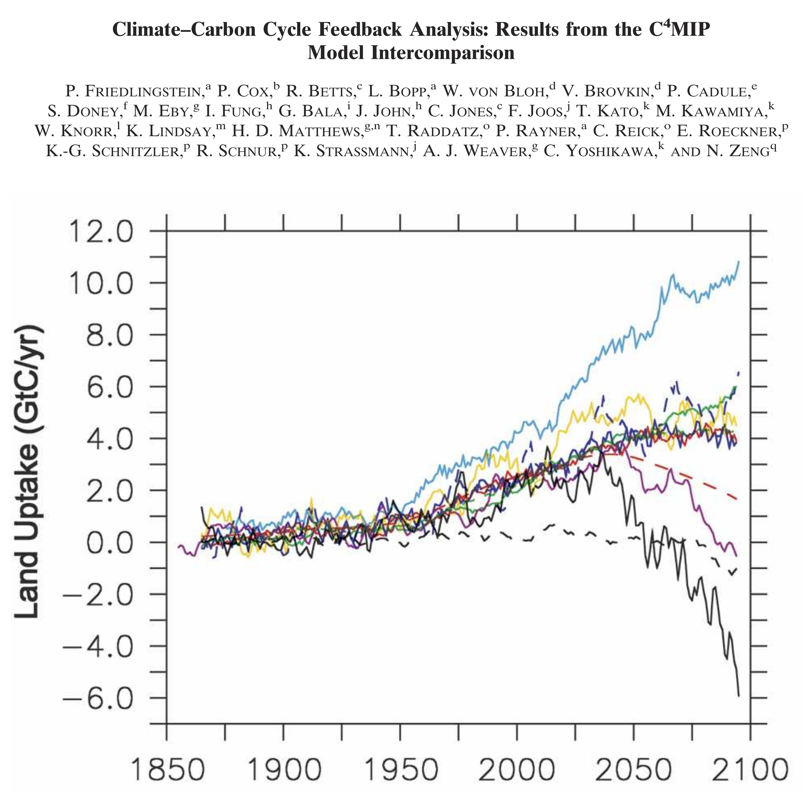
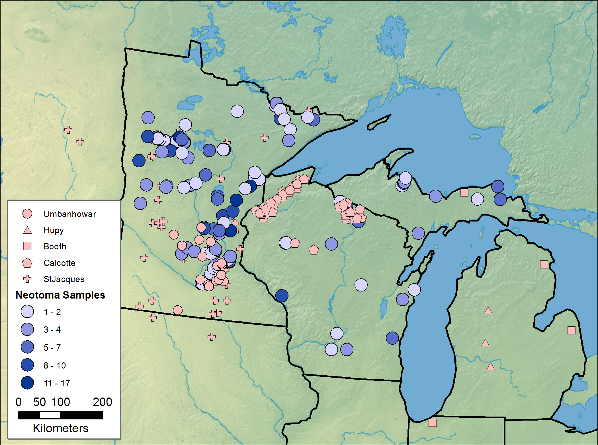
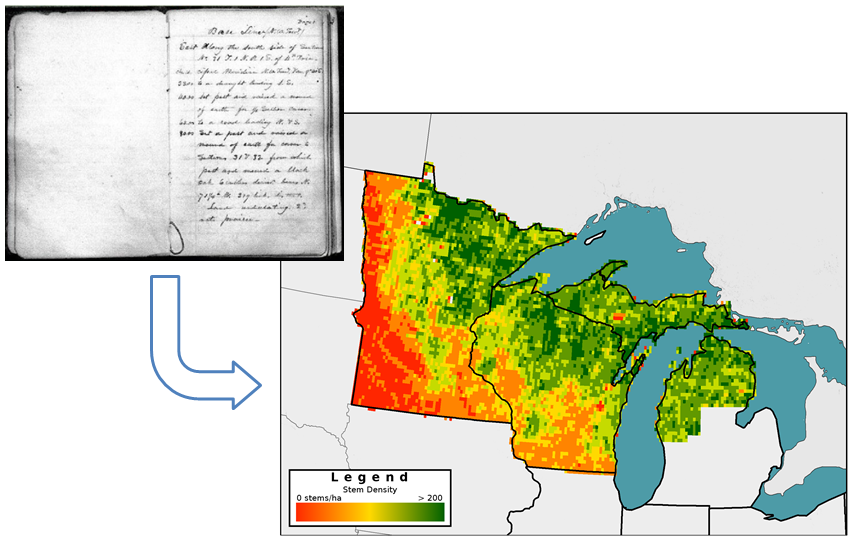
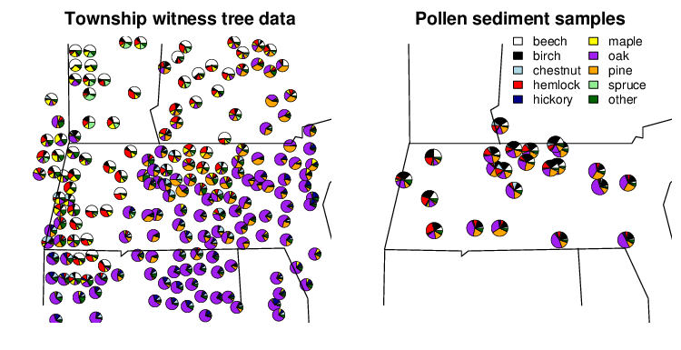
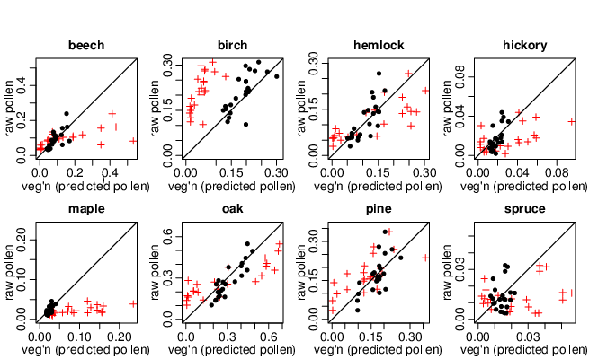
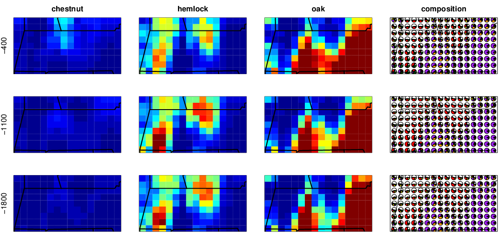
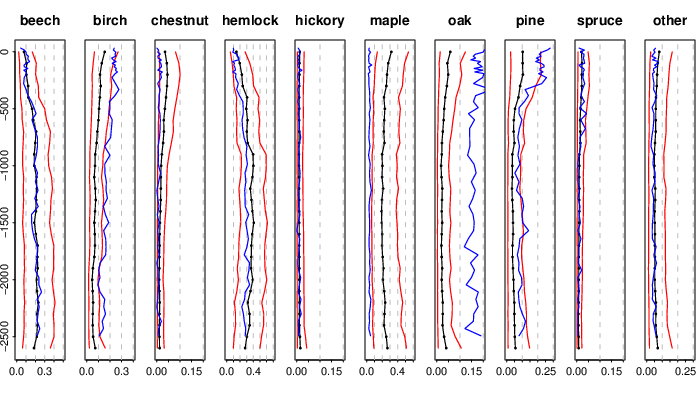
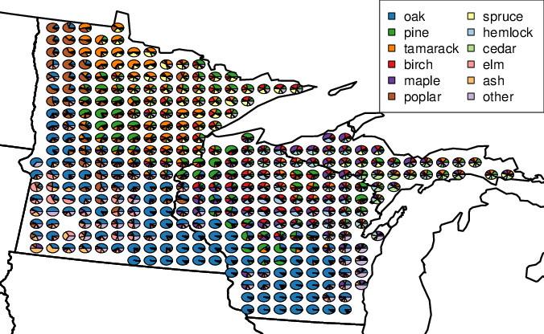
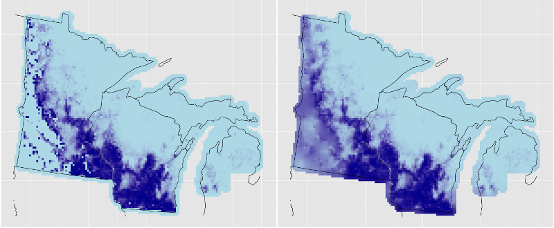
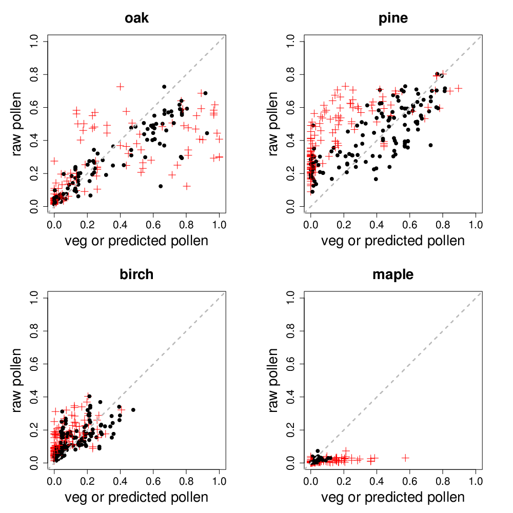

Spatio-temporal changes in forest composition inferred from fossil pollen records
Andria Dawson\(^{a,b}\), Chris Paciorek\(^a\), Jason McLachlan\(^b\), Simon Goring\(^c\)
\(^a\) University of California - Berkeley;
\(^b\) University of Notre Dame;
\(^c\) University of Wisconsin - Madison
Why care about forests of the past?
- Terrestrial ecosystem model predictions are uncertain.
- Decadal- to centennial-scale processes are poorly constrained by data.
- Assumptions of pre-settlement ecosystem stationarity may not be valid.
- We can: assess, initialize, assimilate, and improve these models with paleodata.

The goal
To make inference about spatial vegetation distributions for the past \(\sim\)2500 years, using fossil pollen proxy data.
The approach
Confront the fossil pollen and spatial vegetation data with statistical models to make inference about forest composition and abundance.
The data (Upper Midwest, similar for New England)
| | |
| Fossil pollen: | Public Land Survey: |
| modern to 2500 y.b.p | settlement era |
|  |
 |
| | Graphic credits to Simon Goring! |
STEPPS1
Central New England
STEPPS1 calibration data

183 towns, 26-3149 trees per town 23 ponds, 500 grains per pond
STEPPS1 pollen to veg calibration

| \(+ = \) raw pollen vs. spatially-smoothed vegetation |
| \(\bullet = \) raw pollen vs. model-predicted pollen |
STEPPS1 inferred vegetation

STEPPS1 pollen diagrams

| \(--- \) | raw pollen proportions |
| \(-\bullet- \) | model-estimated vegetation proportions |
| \(--- \) | uncertainty estimates |
STEPPS2 calibration data

aggregated to 8 km square grid cells, >3000 cells; \(\sim\) 90 trees sampled per cell
STEPPS2 calibration data
131 ponds, more to come; cores span different time intervals
STEPPS2 vegetation fit
Oak

Data Model
STEPPS2 pollen to veg calibration

| \(+ = \) raw pollen vs. spatially-smoothed vegetation |
| \(\bullet = \) raw pollen vs. model-predicted pollen |
Challenges
- Sparse and irregularly spaced data.
- Lack of replication.
- Proxy dating is uncertain.
- Calibration data is limited.